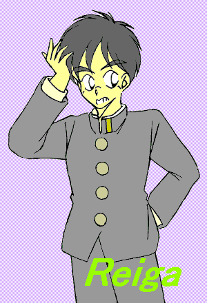
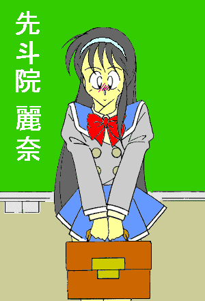
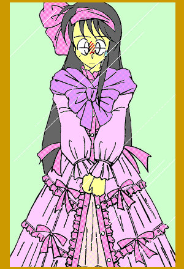
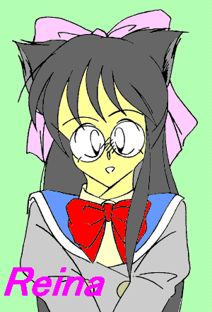

御栗崎レオナ 一六歳 女——
私立共和学園高等部一年在籍。
身長一六〇センチメートル。体重、及びスリーサイズは不明。
家族構成は両親と祖父、小学五年生の弟がひとり。
成績は中の中。スポーツ万能。所属クラブは格闘新体操部と図書文芸部。
近視のため、眼鏡を常時着用。コンタクトレンズは体質的に合わないと推測される。
性格は明朗快活、好奇心旺盛だが少々飽きっぽい。
特技は料理。趣味はカラオケ。マイクを持たせると離さないタイプ。
普段着は、何故かメイドさん風エプロンドレス。
話し言葉の語尾に、「〜にゃ」を付ける癖あり。
追記 ……ネコ耳ネコ尻尾。
眼鏡ネコ娘レオナに関する
素朴な疑問
ＣＲＥＡＴＥＤ ＢＹ ＭＯＮＤＯ
「なっ……納得いかないですわっ」
憤懣（ふんまん）やるせなしっ——といった口調でそうつぶやくと、彼女は手にしていた調査レポートを目の前にあるテーブルに叩きつけた。
彼女の名は瀬丸潮香（せまる・しおか）。重工業、流通、ホテル産業等でその名を知られる瀬丸グループを有する資産家、瀬丸家のお嬢様である。
「…………」
しばし口元に手を当てて考え込み、そして何事かを決意した顔つきになると、彼女は横に置いてあった呼び鈴をつまんで、優雅な仕種で軽く振った。
……誰もこない。もう一度鳴らしてみる。
五秒経過。少し強めに鳴らしてみる。
三秒経過。力を込めて、さらに強く鳴らしてみる。
二秒経過。腕ごと振り回し、ムキになって鳴らす……
「…………聞こえていますよ、潮香お嬢様」
ノックの音とともに部屋のドアが開いて、詰め襟の学生服を着た少年が入ってきた。
年の頃は潮香と同じくらいか少し下。襟元をきちんと留めた着こなしから真面目そうな印象を受けるが、そのあきれたような口調に彼女の柳眉が、ぴくっとはね上がる。
「麗雅（れいが）っ！ 前々から言ってますけど、呼ばれたらすかさず天井裏からとび降りて、『お呼びで』
とか 『影はこれに』
とか台詞きめて片膝付きしてみせるくらいのことしたらどうなのっ」
「あ、あのですね……」

ふた昔前の時代劇に出てくる忍者みたいな真似を要求するお嬢様に、「麗雅」と呼ばれた少年はうんざりした表情を浮かべて言い返した。「……だいたい今時そんな芝居がかったこと、何処の誰がするって——」
「うつけ者————っっ!!」
その時、突然天井裏から猿のような影がとび降りてきて、麗雅の頭を手にした杖の柄（え）で思いっきり殴りつけた。
痛さに思わず頭を抱えてうずくまる麗雅。顔を上げると、目の前に和服に身を包んだ小柄な老婆がふんぞりかえっていた。
高橋留美子のマンガに出てきそうな短躯（たんく）であった。
「ばっ……ばあちゃんっ!?」
「『ばあちゃん』 ではないっ！ 『おばば様』
じゃっ！！」
コブのできた孫の頭を老人離れした力で床に押しつけると、「おばば様」
と名乗った老婆はその横で片膝を付き、潮香に向かって頭（こうべ）をたれた。「——お館（やかた）様にはお見苦しいところをお見せしました。不出来な孫の不始末、なにとぞこのおいぼれのシワ首ひとつでお納めくだされませっ……」
「分かりました。おばばに免じて今のことは、わたしの胸の内に納めることにいたしましょう」
大仰な身振りで平身低頭する老婆に、『お館様』
と呼びかけられた潮香も芝居がかった口調で鷹揚に頷いてみせる。
「も、もったいのうございますっ。…………よいか麗雅っ。我ら先斗院（せんといん）家の者は皆、代々瀬丸家の影としてお仕えしてきた身の上。そのこと努々（ゆめゆめ）忘れてはなるまいぞっ」
明治維新以前からの名家である瀬丸家を主家と仰ぎ、代々その家来筋として仕えてきた先斗院家は、同時に
『影魔（かげま）衆』 という “忍びの者”
の直系でもあるのだ。
そして麗雅もまた、幼少の頃から潮香お嬢様の
“お付き” として、今日まで姉弟同様に育てられてきたのである。
まあ、エキセントリックで強引な性格の潮香に振り回されている姿は、お付きというよりむしろ、『下僕（げぼく）』
と称したほうがぴったりくるかもしれないが。
少なくとも麗雅自身にとっては、迷惑このうえない
“血筋” なのだった。
「だ、だからって今時、忍者のノリは古過ぎ…………ごべっ！」
そんな薄幸（？）の孫の顔を再度床に叩きつけ、おばばは潮香に向き直った。「——で、此度（こたび）の御召はまたいかようなことで？」
毛足の長いじゅうたんの上とはいえ、ダメージはゼロではない。
「実は、この者について調べて欲しいのです」
先程叩きつけたレポートに添えられていた写真を抜き取り、潮香はそれをふたりにさし出した。
鼻を押さえつつ、麗雅はそれをのぞき込む。
「おっ、結構可愛いっ」
「なっ、なんと面妖な——」
そこに写っていたのは、潮香の通う（というより、彼女の祖父が理事長を務める）共和学園高等部の制服を着たひとりの女子生徒の姿であった。
ツリ目気味の目に眼鏡をかけ、頭の上にでっかいリボンをのせている。
隠し撮りされたもののはずなのに、何故かカメラ目線で振り向きＶサインなんかしている（笑）。
だが、おばばが 「面妖な」
とつぶやいたのは、そのことではなかった。
「ね、ネコ耳……？」
「高等部一年の御栗崎レオナ。ネコ耳だけでなくネコ尻尾までありますわっ」
つぶやく麗雅に、真顔で答える潮香。
確かにスカートの裾から、髪の毛と同じ色した尻尾がピンと上向いてとび出している。
「共和学園の生徒の素行調査なら、学園の方で調べれば……」
「その程度のことなら、とっくにやっていますわっ」
変な趣味の娘（こ）だな——と思いつつ、やる気なさそうにつぶやく麗雅に、潮香は調査レポートをぱんぱんと叩いて、いらただしげに応じた。「……しかし、こんな通り一辺のリサーチ、わたしの疑問に対する答えにはなりませんですわっ」
そうまくしたてると、彼女は麗雅の顔をひたと見据えた。
「わたしの知りたいことはただひとつ……」
「…………」
愁いを帯びた真剣な眼差しに、麗雅は思わず気圧され、つばを飲みこむ。
「——わたしの知りたいのは、このネコ耳でどうやって眼鏡をかけているかということですわっ！」
…………………………………………。
「そ、……それだけ？」
「そのことを考えるたびに、あああ夜も眠れなくなってしまいますわっ」
「い……いや、やっぱり耳のところに眼鏡のつる引っかけてるんじゃ——」
「それだと耳が四つもあるということになりますわっ」
呆れ返った口調の麗雅に、間髪入れずに答える潮香。「……そんなこと、生物学的にありえませんですわっ」
——な、何わけの分からんことをっ。コスプレに整合性求めてどーするっ。
そんな考えを見透かしたかのように、潮香は麗雅をキッ——と睨みつけ、「麗雅っ、あなたはこのネコ耳が扮装だとでも思っているのですかっ？」
「えっ!? ま、まあ、よく学校の服装チェックに引っかからないな、って思いますけど」
「おそらく本物ですわっ、このネコ耳は」
「……なんとっ。やはり化生の者であったか」
先程まで黙っていたおばばが、「んなバカな」
と言いかけた麗雅の足を杖で踏みつけ声を荒らげた。「——なれど、そのような者の秘事を暴く大役を我が孫に下知くだされるとは、ありがたきことこのうえなしっ。
よいか麗雅っ、お館様の信頼に答えるべく、此度の命（めい）、身を粉にして勤めるのじゃ！！」
とことん忍者ノリの祖母であった。
「ちょっと待ったっ。そんなに気になるんだったら直接本人にきけばいいでしょうがっ」
「こっ、このわたしに
『ねえねえ、その眼鏡どうやってかけてるの？』
なんてあのネコ娘に尋ねろというのっ!?」
「うつけ者おおおおおっ！ お館様にかような真似をさせようとは言語道断っ！！
よいか麗雅っ、影魔衆たる者——
我が命我がものと思わず、御下命如何（いか）にても果たすべしっ。
……なのじゃっ」
『大江戸捜査網』 かいな……。
杖の先を喉元に突きつけてすごんでくる祖母と、問答無用で睨みつけてくるお嬢様。
「で……でも相手はネコ耳だろうとなんだろうと、女の子ですよっ。
男のぼく——あ、いや、自分が近づいていくのは、それはそれで何かと差し障りがあるんじゃないですかっ」
「それもそうですわね。…………ねえおばば、何かいい方法ないかしら？」
「まずは気を鎮めて、じっくり考えることじゃ」
そう言いながら、いつの間にか茶道具一式を用意し、じゅうたんの上に座布団を敷いて、しゃかしゃかと茶筅（ちゃせん）を動かし茶を点てるおばば。
なんの脈絡もなかった。「ささ、麗雅。……まずは一服」
「…………」
——う、うさん臭過ぎるっ。
じと目で見つめる麗雅に、おばばはいきなりよよと泣き崩れ、その足首にしがみついた。
「…………あああっ、このばばの点てた茶が飲めぬと言うのかえ〜っ。
孫の……可愛い孫のためによかれと思ってしたことなのにっ、そんな目で見るのかえ〜っ」
芝居がかった叫び声を上げ、そして恨めしそうに見上げてくる。そのわざとらしくうるうるさせた目に、麗雅の中で何かがキレた。
「あ〜っ分かった分かったっ！ 飲みゃいいんだろっ飲みゃっ！！」
この手の年寄りは、一度すねたりいじけたりすると始末に悪い——。
不作法にも立ったまま、腰に手を当て片手で茶碗を持ち、ぐーっと一気に中身を飲み干す麗雅。
「全く……こんなことくらいでいじけないでってぐおおおおおっやっぱり何か入って……い、た…………」
うぐっ、と喉を押さえて茶碗を取り落とす。全身に広がっていくしびれに、麗雅の意識が遠くなっていった。
「れ、麗雅っ！」
「……心配めさるな。大事ない」
思わず立ちすくむ潮香にそうつぶやくと、おばばは気絶し床に倒れた麗雅にかがみ込み、何を思ったのかいきなりその服を脱がせていく。
「きゃっ！」
下着まではぎ取られ全裸になった麗雅の姿に、潮香は思わず両手で顔を覆う。それでも指の間からちらっと覗き、あーやだ男の子のアレってああなっているのねってまーわたしったらなんてはしたないことをっ——と、自分で自分にツッコミを入れてたりするのだが。
「ふっふっふっ、こんなこともあろうかと麗雅の身体には、密かに我が影魔衆の秘儀を施してあるのじゃ……」
そんな 『お館様』
を無視して、懐から竹筒を取り出し、中の黄金色に輝く油のような液体を孫の身体にまんべんなくかけ始めるおばば。
そして作業を終えると、すっと後ろに下がり、杖の先で仰向けに倒れたままの麗雅を指し示した。
「……見られよっ。我ら影魔衆秘儀中の秘儀、『くノ一華羽衣（はなはごろも）』
をっっ！！」
くノ一
［くのいち］１．女忍者のこと。「く」 「ノ」
「一」 の字を重ねて書くと、「女」 の字になることからそう言われる。２．言っておくが
“くノ一”
という言葉は歴史上存在せず、また女忍者がいたという記録も存在しない。この言葉はかの忍法小説の大家がつくった架空の用語である。
次の瞬間、麗雅の身体がびくっ——とのけぞった。
「ああっ!?」
潮香の瞳が驚愕に見開かれる。先程指の間から覗き見した麗雅の
“アレ” が、小さくなりながら股間の中へと埋没していくではないか。
いや、それ自身が別の器官へと形を変えていく。彼女の見知ったあの器官に。
「そ…………そんなっ!?」
肌の色が抜けるように白く変わり、短かった髪の毛が、引きのばされるように床に広がっていく。身体全体がひとまわり小さくなり、目を閉じたその顔つきが、まるで花が開くように艶やかさをたたえ……
……そしてそこには少年ではなく、少女の裸身が横たわっていた。
丸みを帯びた華奢な四肢、膨らみを主張する乳房、そして股間には薄くなったヘアに覆われた一筋の割れ目。
「こ…………こ、これはいったい……っ？」
目の前で起こった怪異なメタモルフォーゼに、かすれたような声でそうつぶやく潮香。
「これぞ先斗院家影魔衆に伝わる転性の秘儀、『くノ一華羽衣の術』
っ。
……お館様の影供（かげとも）となることを定められたその日より、こうなることは運命（さだめ）であったのじゃっ」
潮香の横に立つおばばが感慨深げに答える。すると、麗雅だった少女が
「んっ……」 と声を上げ、身じろぎとともに目を開き、上半身をゆっくりと起こした。
顔をほんのりと赤らめ、潮香は我知らず両手を握りしめる。少女は長くなった髪を払い、両の乳房を小さくなった手のひらでいとおしむようにすくい上げると、そこでふたりの視線に気付き、「きゃっ！」
と叫んで身をすくませた。
「あっ……、お、おばば様、……………………あ、あたし…………、あたしはいったい……？」
胸を恥ずかしそうに隠し、涼やかな声をか細く震わせながら戸惑う少女を見つめ、何やら背筋にぞくぞくした感覚をおぼえ、つばを飲みこむ潮香。
そして顔を赤らめうつむく孫（娘？）に、おばばは目を細めながら、
「おおっ、見事っ。ぬしは今日より、麗しの奈と書いて
『麗奈（れいな）』 と名乗るが良い」
「……麗奈…………あたしは、麗奈……………………って、あ……あれ？ ぼ、ぼくはいったい…………」
むにっ。
「え？ むにっ……って、……………………う、うわあああああああああっ!!
な、な、なっ…………なんだこの胸はあああああっ！！」
いきなり素に戻り、変貌した自分の身体に気付いてパニックになる麗雅。
「……ななななんだこの声！ ……うわわわなんだこの髪っ！！ …………あああなっないっ！ ×××がないっ！！
い……いったいぜんたいどーなってんだあああああっっ！！
…………………………………………
…………………………………………
…………………………………………
……………………あああ、あ…………あ、……あ、あは、あは、……あはははは…………」
壊れた。
「ううむっ、口伝では身も心も 『くノ一』 になるとあったのじゃが。
まあよい。麗雅、いや麗奈よ。その姿ならばレオナとやらいう化け猫娘に近づくことも容易であろう。
影魔衆のくノ一として、見事きゃつの秘事をあばき、お館様のご期待に添う働きを見せるのじゃっ！！」
「そ……そうですわっ。確かにその姿ならばなんの問題もありませんですわっ」
わたしとしたことが、当初の目的を忘れてつい萌え萌えっとなってしまいましたわっ——と、潮香は頭を振り、そして虚ろな笑い声を上げ続ける麗雅をひたと見据えた。
「転入手続きはわたしの方でなんとかいたします。それから当面の生活に必要なものも——。
ですからあなたは心配せずに、女子生徒としてあのネコ娘に近づきなさいっ。
そして、眼鏡の秘密を白日のもとにするのですわっ！！ このわたしの安眠のためにっ！！」
……とかなんとか一方的に指示を出しつつも心の中では、やっぱり初めての下着は清楚でシンプルな白からですわね——などと、ヨコシマな思いにとらわれていたりする潮香お嬢様であった。
しかし、当の本人はようやく正気に戻ると、勝手に話を進める潮香とその横でうむうむとうなずくおばばを睨みつけ、大声で叫んだ。
「・・・・・・も・と・に・戻せえええええええっっ!!」
「…………せ、先斗院、れ……麗奈、です……。ど、どうぞ、よ……よろしく……」
二日後、麗雅は女子転入生 「先斗院 麗奈」
として、共和学園高等部一年Ａ組の黒板の前に立っていた。
「はあ〜いみなさあ〜んっ、先斗院さんはあ〜っ、お父様のお仕事の都合でえ〜っ、パプアニューギニアから日本に帰ってきてえ〜っ、こっちに引っ越してきたそうでえ〜すっ。
みなさあ〜んっ、仲良くしてあげてくださいねえ〜っ」
クラス担任の若い女の先生が、ニコニコと、まるで小学生を相手にしているかのような口調で彼——彼女を紹介する。
しかし、
——な……なんでパプアニューギニアなんだっ。
口元を引きつらせながら、お嬢様が考えた無茶苦茶な設定に心の中で虚しいツッコミを入れる麗雅、いや麗奈。
長い髪が重く、うっとうしい。
華奢になった手足に、いつものように力が入らない。
胸を覆うブラジャーが膨らんだ乳房を、そして肌にぴちっとはりつくショーツがフラットになった股間と丸くなったお尻を否応もなく意識させる……。
「……あうっ」
大きく変容した肉体に感じる違和感と、自分が自分でなくなった心細さ、さらに女子の下着と制服（セーラー襟のブレザーとブルーのプリーツスカート）を身に着け女の子としてふるまうことへの羞恥と何かしらの興奮に、思わず奇声を上げてそこら中を走り回りたくなる衝動にとらわれそうになる。

——あ…………あ、脚元がすーすーする……っ（汗）。
学生カバンを両手で身体の前に持っているのは、単に自分のスカート姿を無意識に隠そうとしているに過ぎない。ちなみに頭のカチューシャは、「長い黒髪にはこれがお約束のアイテムですわっ」
と、潮香が無理矢理着けさせたものだったりする。
「…………」
しかし、クラスの生徒たちはそんな麗奈（麗雅）を、新しい学校に緊張しているんだな——と好意的に解釈した。実際、気の早い男子生徒の何人かがピンク色の視線を彼女に向かってとばしている。
——だああああっ、や……やめてくれえええええっっ！！
ますますその身をキュッとちぢこませ、そして麗奈（麗雅）は今の自分がまぎれもない
『女の子』 であることをさらに認識させられる。
「ええ〜っとおっ、それじゃあ〜っ、先斗院さんのお〜っ、席はあ〜っ……」
間延びした声でクラス担任が、教室を見回したその時、
「はいはいは〜いっ！ ここが空いてるにゃっ！」
後ろの席の方で声が上がった。
「は〜いっ、それじゃあ〜っ先斗院さあ〜ん、あそこにいる御栗崎さんの隣に座ってくださあ〜いっ」
「あっ、は……はい…………」
クラス中の注目にうつむきながら、担任の指さす方へと顔を赤らめ歩きだす麗奈（麗雅）だったが、
——えっ、……お、御栗崎？
はっと顔を上げると、まん丸眼鏡の奥のツリ目と視線が合う。
「……うにゃっ？」
バカでかいリボンに、ぴくっと動くネコの耳（？）。
次の瞬間、ツリ目が笑顔に変わった。「——にゃっ、御栗崎レオナだにゃ。……よろしくだにゃっ」
脳天気な表情で挨拶する彼女に、麗奈（麗雅）の顔がざああああっと引きつった。
——こっこっこっ、こいつがっ、……こいつが御栗崎レオナかっ。
こ……こいつのっ…………このほえほえした奴のせいでっ！
…………ボクは女にされたのかあああああ……っ！！
はなはだ筋違いだとは分かっているのだが、やっぱりそう思わずにはいられない麗奈（麗雅）であった。
「う〜っ、レオナの顔に、なんかついてるかにゃ？」
「えっ、あっ、そ……そんなこと、…………ない……で、す……」
おそるおそる問いかけてくるレオナに、反射的に取り繕う麗奈（麗雅）。どうやら無意識の内に、じーっとにらみつけていたらしい。
「うにゃっ。よかったにゃ。……じゃあ早く座るにゃっ。
…………ふふっ。レイナとレオナ。一字違いだにゃっ」
再びにぱっ——と無防備な笑顔を浮かべるレオナに、麗奈（麗雅）はかすかな罪悪感をおぼえた。「あ……あの、ええっと、……こ、こちらこそよろしく、お、お願いします……お、御栗崎さん……」
「レオナでいいにゃ」
かしこまる麗奈（麗雅）に、眼鏡ネコ耳娘はそっけなく言い返す。そして、いきなりがたがたと机をくっつけてきた。
「……教科書まだだにゃ。見せてあげるにゃっ」
「あっ、あの、ボク……あ、あた……あたし——」
持ってるから……と言いかけた麗奈（麗雅）の返事も聞かずに、レオナは机の合わせ目に教科書を開いて、椅子ごと彼女の方へと身を寄せてきた。
——うっ。
ショートカットのうなじに思わず顔を赤らめ、麗奈（麗雅）はあわてて首を振った。
昼休み——
「ここの食堂のおすすめは、ナポリタンとサラダのセットだにゃっ」
得意気に自慢するレオナに付き合って、麗奈（麗雅）も同じメニューを注文して席に着いた。
共和学園の学生食堂は、カフェテリア風のおしゃれなものだ。だが学食の常として、中はかなり混雑している。
ちなみに今日の午前中、レオナは麗奈（麗雅）にずーっとくっつき、世話を焼き続けていた。
クラスメイトの紹介や学校の案内はいうに及ばず、はてはひなたぼっこの場所からフケるときの抜け道の行き方まで懇切丁寧に説明していた。
よっぽど彼……もとい、彼女のことが気にいったようである。
「……う〜んとにゃ、ねえ、レイナ」
食事を始めると同時に、前に座ったレオナが話しかけてきた。「な……何？」
「——レイナって、見かけによらず…………結構ボーイッシュなんだにゃ」
長い髪の毛の先がスパゲティの中に入らないように悪戦苦闘していた麗奈（麗雅）は、その言葉にびくっ——と顔を上げ、目をそらした。「そ…………そうか……、な？」
「だってレイナって、自分のこと無意識に
『ボク』
って言ったりするし、男っぽい仕種することあるしにゃ……」
「…………」
「あ……っ。ご、ごめんだにゃ。気にしてることだったらあやまるにゃっ」
麗奈（麗雅）が黙り込んだのを見て、あわてて拝むように手を合わせるレオナ。
「う、ううん、き……気にしてないから…………。そ、その……え〜っと、お、男の兄弟が多いから…………」
「そうなんだ……にゃ」
「う、うん、そ、そう……そう、なの……」
「うちにも弟がいるにゃ」
「ふ……ふうん、そ、そうなんだ」
そこで会話が途切れ、ふたりはとりあえず食事に専念する。
しかし、麗奈（麗雅）の視線はレオナのネコ耳に釘付けになっていた。
——う〜ん、見れば見るほど本物みたいだな……。
「弟さんも、ネコ耳なの？」
と尋ねようとして、麗奈（麗雅）はとっさに思いとどまった。
——知りあったばかりでいきなりそんなこと尋ねるのも変だしなあ……。
思いつきだけで生きている（？）お嬢様の元にいるせいか、普段から必要以上に慎重に動いてしまう麗奈（麗雅）だった。
さらに、学校中の人間が彼女のネコ耳ネコ尻尾（……の、コスプレ？）に、なんの疑問も持たず自然に接していることも、直接疑問をぶつけることをためらわせる原因であった。
学校でそのことを騒いでいるのは、潮香お嬢様ひとりのようだ。
——むしろそっちの方が謎だよなあ……。
フォークをくわえたまま 「う〜ん」
と唸る麗奈（麗雅）。すると、レオナがぱっ、と顔を上げた。
「……ね、ねえレイナ」 「えっ？」
「——あ、あのにゃ、……パプアニューギニアって、どんなところにゃ？」
興味しんしん、といった感じで再び尋ねてくるレオナに、麗奈（麗雅）は言葉を詰まらせる。
「え、え〜っと、そ……その、あ……あの、その…………、う〜んと……その、う、海がキレイで……、そ……空が青くて……、ハイビスカスとかヤシの木とかが、い……いっぱいあって…………」
パプアニューギニアどころか、ハワイにも行ったことがない麗奈（麗雅）である。
「なるほどにゃ。…………でも、そのわりにレイナはあんまり日に焼けてないにゃ」
ぎくっ。
「あ、あっ、あ……あのそのっ、その、……か、身体が弱くて、あ、あまり外に行けなかったから…………」
病弱なのにボーイッシュな少女って、いったいなんなんだっ——と思いながらも、麗奈（麗雅）はしどろもどろに答えを返す。
「そ…………そうなんだにゃ……」
愁いを含んだ表情で目をうるうるさせて見つめてくるレオナ。麗奈（麗雅）はあわてて両手を振る。
「あ、いやあのっ、……今はその、も……もう、げ、元気になってる……から…………」
「だにゃ。……安心したにゃっ」
ほっとしたような表情を浮かべるレオナに、麗奈（麗雅）の良心がちくちく痛んだ。
「——そうだっ。ねえレイナっ、今日の放課後、時間あるかにゃっ？」
「えっ？」
「……帰りに、いいとこ連れていってあげるにゃっ」
いきなり身をのりだし、レオナはテーブルの上にあった麗奈（麗雅）の右手をつかんで引っぱった。
とことんマイペースな娘である。
「あ、で……でも…………」
「だにゃっ、だにゃっ、……行くだにゃっ！ 一緒に行くだにゃっ！」
………… 『ビー〇トウォーズ』
のライ〇ックスか、お前はっ。
放課後、根負けした麗奈（麗雅）が連れて来られたのは、電車で駅ふたつ越えたところにある一軒のお店であった。
「……らびあん、ろーず？」
ピンクとアイボリーを基調にした、いかにも
“女の子のためのお店” といったブティック
《らびあんろーず》 に、レオナはニコニコしながら入っていく。入口横のウィンドウに可愛らしくディスプレイされているふりふり系のブラウスやらスカートに圧倒されながらも、麗奈（麗雅）はおずおずとそのあとについて行った。
「あら、いらっしゃい、レオナちゃん」
「こんにちはだにゃっ、知世（ともよ）さんっ」
店の奥から現れた、店長らしい女性に挨拶するレオナ。どうやら彼女、ここの常連さんのようだ。
「……あれっ、さおりんは？」
「あ、あの娘（こ）今日はクラブで遅くなるって」
きょろきょろとあたりを見回すレオナに、店長さんが微笑む。
「ちえっ、残念だにゃ。……またお店の服着せて、からかってやろうと思ったのににゃっ」
「ふふっ。でもほどほどにねっ。あれでも一応、あたしの娘だから……」
やんわりとたしなめる店長さんに、てへっと舌を出すレオナ。そして、意味不明な会話について行けずにぼーっと突っ立っていた麗奈（麗雅）のそばに寄ると、その肩をつかんだ。
「へへっ、紹介するにゃっ。……レオナの新しい友だちの、レイナちゃんだにゃっ」
「ど……どうも」
「あら可愛い。……じゃあゆっくり見ていってねっ」
ちゃん付けで呼ばれ、「可愛い」
と声をかけられて、麗奈（麗雅）はますます顔を赤らめて身を縮める。
「ねえねえレイナっ、あそこの服見るにゃっ」
レオナに引っぱられて、ならべられた洋服やランジェリーを物色しながら（させられながら）店の中を歩く。
そして、
「これこれっ。……これすっごく可愛いにゃっ」
「う……うん、か、可愛い…………ね」
立ち止まり、目をキラキラさせるレオナに、麗奈（麗雅）はこんなの誰が着るんだっ——と思いながら返事をした。
ふたりの目の前には、一着の洋服が飾られている。
色はパステルピンク。ぞろっとした裾とたっぷりした袖、そしてこれでもかとばかりにデコレートされたリボンとフリルが、いかにも
“重そう”
なピンクハウス系ワンピースであった。
「レイナレイナっ、これ着てみるにゃっ」
「え…………えっ!? ぼっ、……ボクがっ!?」
一人称を訂正することさえ忘れて、狼狽する麗奈（麗雅）。そんな彼女の両肩をがしっとつかみ、レオナはぐぐっと顔を近づけてきた。
「……今朝初めて会った時から、レイナにこの服絶対似合うと思ってたんだにゃっ！」
どどどどどっ——と何故か両のツリ目から涙を滝のように流して訴えかけるレオナ。「……だから、何がなんでも着て欲しいんだにゃっ！！」
すさまじい気迫であった。『行け行け飛雄馬』
のイントロが聞こえてきそうであった。
「で、でも、こ……これ、売り物じゃ——」
「あらいいわよ。こーんな可愛い子に着てもらえるんなら、おばさんも嬉しいわ」
いつの間にかそばに来ていた店長さんが、うつむいてしまった麗奈（麗雅）の顔をニコニコとのぞき込んできた。
「け……けど、あの、……は、恥ずかしい…………」
「だいじょーぶだにゃ。ここにはレイナとレオナしかいないにゃっ。
……それに、こーゆーの着たら、レイナもきっと、もっと女の子らしくなるにゃっ」
「い、いや、こ……これ以上女らしくなりたいってわけじゃ——うわっ!?」
思わず “本音”
を言う麗奈（麗雅）をまわれ右させると、レオナはその背中を試着室の方へと押した。その後ろではあの店長さんが件（くだん）の洋服をディスプレイから外している。
「だ……だから、その、あの、い……………………嫌だあああああああ〜っ!!」
試着室に入れられ、身をよじる麗奈（麗雅）。しかし、レオナは慣れた手つきでそんな彼女の制服をはぎ取って（？）いく。
さらに、この期に及んでなおもじたばたする下着姿の彼女に、これまた慣れた手つきでてきぱきと着付けをしていく店長さん。
どうやらこのふたり、この手の洋服を嫌がる女の子に無理矢理着せた経験が何度もあるようだ（笑）。
「…………と、できたっ。……うん、よく似合うじゃない」
「ほんとにゃっ。すっごく可愛いにゃ。……ほら、鏡見てみるにゃっ、レイナっ」
「うわわ……っ！」

ぽんっ——と軽く背中をつつかれて、麗奈（麗雅）は鏡と向き合わされる。
「えっ!?」
一拍置いて、店の中に絶叫がこだました。
「うっ…………う、う、うっ……
うぎゃあああああああ〜っっ!!」
…………………………………………
…………………………………………
…………………………………………
……落ちた。
羞恥と背徳と、そして倒錯（あくまで麗奈（麗雅）の視点からであるが）の一瞬——。
「…………………………………………
…………あ……あ……あ・あ・あ・あ・あ…………っ」
喉の奥から、声を絞り出すようしてにうめく麗奈（麗雅）。
見たくなかった…………でも、何故か視線をはずせないっ。
下半身が金縛りにあったように動かないっ。
さらに、腰の中心からぞくぞくしたものが背筋を通って頭の芯を直撃し、麗奈（麗雅）は思わず自分の両肩をかき抱く。
——お……女の子…………ぼ、ボクは女の子……。
そして、鏡に映った愛くるしいドレス姿の自分に、彼——彼女の心の中で何かが音を立てて砕け散った。
それからあとのことは、よくおぼえていない……。
——眼鏡ネコ耳ネコ尻尾少女御栗崎レオナに近づき、その眼鏡の秘密を暴く。
麗奈（麗雅）が潮香お嬢様から下された指令（……）は、確かそうであった。
そして、目的の前半分は、レオナ自身がその好奇心のおもむくままに、こちらに近づいてきてくれたため呆気ないほどすんなりいった。
しかし、残り半分はことごとくタイミングを逸している。……というか、レオナのペースにのせられっぱなし。
「……だ、駄目だっ。…………もう限界だっ」
カバンと紙袋を手にして前を行くレオナの背中と、そのお尻でふらふら揺れるネコ尻尾を睨みつけ、麗奈（麗雅）は小声でつぶやいた。
——こっ、これ以上女の子やっていたら、…………どうにかなってしまうっ！
は……早く彼女の秘密を調べて、男に戻らないとっ！！
元の男に戻してもらえるかどうかも、……そもそも元に戻れるのかどうかも分からないのだが、うつむきながらとぼとぼと歩いていた麗奈（麗雅）はカバンの持ち手をぎゅっと握りしめ、瞳に決意の色を浮かべて顔を上げた。
「れ……っ、レオナ、さんっ」 「うにゃっ？」
固い口調に、レオナの足が止まった。
麗奈（麗雅）は息をつくと、単刀直入に尋ねる。「ど、どうして、……どうして、ね、ネコ耳、……なの？」
レオナの肩が、ぴくっと震えた。
「……知りたい？」
次の瞬間、周囲の温度が下がった。
言葉に詰まった麗奈（麗雅）を肩ごしに見つめ、レオナは静かに口を開いた。
「……教えてあげてもいいけど、…………聞いたら二度とあと戻りできなくなるにゃ……」
「…………」
麗奈（麗雅）は思わずごくっ、とつばを飲み込む。しかし、レオナは再びいつものにぱっとした笑顔に戻り、
「……すっかり遅くなっちゃったにゃ。レイナはどっち向きの電車に乗るにゃ？」
何事もなかったかのように歩きだした。
「……あっ」
呆気にとられる麗奈（麗雅）。しかし、あわてて首を振ると、小走りにレオナを追い越し彼女の前に回った。
「にゃっ!?」
「れ、レオナ……っ、…………………………………………ごめんっ！」
そのままぱっと手を伸ばし、レオナの眼鏡をむしり取る。
そして、彼——彼女は見た。
御栗崎レオナの秘密を……っ。
「・・・・・・・・・・・・見い〜たあ〜にゃあああああっっ」
…………………………………………
…………………………………………
…………………………………………
また、いつもと同じ朝が来た。
「おっはよう、レオナっ」
「あ、レオナっおはようっ。今日も元気だねっ」
「おっはよーだにゃっ」
いつもと同じ登校風景。制服に身を包んだ眼鏡ネコ娘レオナも、いつもと同じ笑顔で、いつもと同じようにクラスメイトたちと学校までの道を歩く。
「ねえねえレオナっ、今日クラブないでしょっ。学校すんだらカラオケ行こっ」
「うにゃっ。行くだにゃ、行くだにゃっ！」
「え〜っ、また御栗崎のアニソンメドレー聞かされるのか〜っ？」
「なんだにゃその言い方っ。……前は自分も一緒に唄ってたくせにだにゃっ」
「それにマイク持ったら離さないだろお前っ。『レオナちゃんオンステージ〜っ』
とか言って」
「コントローラー独占するヤツに言われたくないにゃっ」
ぶーたれる男子たちに口を尖らせる。と、その時、レオナは前を行く生徒たちの中にいる、ひとりの女生徒に気付いた。
「——にゃっ！」
とび跳ねるように駆け寄ると、その背中を軽く叩く。「おっはよーだにゃっ、レ・イ・ナっ！」
そう呼ばれた女生徒は、長い髪と制服のスカートを優雅になびかせてくるっと振り向くと、眼鏡の奥の目をニコッと細め、小首をかしげた。
「…………おはようございますですにゃ、レオナっ」

お揃いの大きなリボン。
髪の毛と同じ色のネコ耳とネコ尻尾——。
「ふふっ。すっかりそのしゃべり方が身についたにゃ」
横に並んで、顔をのぞき込むようにして問いかけるレオナ。
「そうですにゃ。……でも、今はずっと前からこうだったような気もしますですにゃ。
それに、なんでもいいように考えた方が毎日が楽しいですにゃっ。
……だからボクは、今の自分がとっても好きですにゃ」
「そうだにゃ、そうだにゃ。レイナも肩肘張らずに気楽にいくだにゃ」
「はいですにゃっ」
そう答えて、再びニッコリ。
そして、少なくとも潮香お嬢様とおばば様に、「こうなったのは、おふたりのせいですにゃ」
って、面と向かって開き直れるようになれましたですにゃ……と、心の中でつけ加える。
すっかり眼鏡ネコ娘が板に付いた、先斗院麗奈——いや、レイナである。
「ねえレオナっ、ボクまたあのブティックに行きたいですにゃ。
欲しい洋服がいっぱいできちゃったんですにゃっ」
「う〜ん、今日は放課後みんなでカラオケ行くから、また今度だにゃ。
……そうだっ、レイナも一緒にカラオケ来るにゃっ」
「にゃっ、いいですにゃ。ボクも連れてってくださいですにゃ」
彼女がそう言ったとたん、突然まわりがざわつきだした。
「何っ!? レイナちゃんも行くって!?」
「あ、それじゃ俺も行くっ」
「俺も俺もっ」
「おいも行きますたいっ。レイナしゃんがおれば百人力ですたいっ」
「わいも行くで〜っ。レイナはんはおまんには渡さんけの〜っ」
男子どもが、我も我もと口々に名乗りを上げる。
……なんてったって美少女。清楚で可愛く、おしとやか（？）。
しかも眼鏡にネコ耳、ネコ尻尾。おまけに一人称がちょっとミスマッチな
『ボク』 ときた日には……
まさに萌えツボ、ピンポイント直撃状態（笑）。
転入数日目にして、きっちり校内のアイドルと化したレイナであった。
「うにゃあああっお前らあっ！ レオナとレイナで、ずいぶん態度が違うだにゃああああっっ！！」
髪の毛を逆立てて、ふーっ！ といった感じで男子たちに噛みつくレオナ。レイナはそれを見てくすくすと笑うと、彼女の腕に自分の腕をするっと絡ませた。
「ほらっ、ぐずぐずしてると遅刻してしまいますですにゃっ、レオナっ」
「うにゃあっ！ まだ大丈夫だにゃっ！」
そして、ふたりの眼鏡ネコ娘は、クラスメイトたちと一緒に通学路を学校へと急ぐのであった……。
死して屍（しかばね）拾う者なし。さらば、少年の日々よ・・・・・・。
「どーして麗雅まで眼鏡ネコ耳ネコ尻尾娘になってしまいますですの〜っっ！！
……ああっ、今夜もまた眠れないですわ〜っっ！！」
おしまい。
ここまで読んでくれたみなさん、お疲れさまでした。
結局、レオナの眼鏡の秘密は分からずじまいでした（笑）。
彼女のネコ耳と尻尾が、はたしてただのコスプレか、はたまたちゃんと（？）生えているのかは、それぞれの心の中で結論つけちゃってください。
ところで、絵師みずからのレオナ・ストーリー、いかがだったでしょうか？
もちろん、これが 「正解」
だなんておこがましいこと言うつもりはありません。レオナはいわば
“役者さん” なので、いろんな役をふってやって欲しいものです。
ですからもし、この眼鏡ネコ娘のお話をつむいでみようかと思われたなら、どうか、冒頭の調査報告は無視しちゃってください（今回、レオナ自身がＴＳキャラかどうかもはっきりさせていないし）。
それから、今回登場（誕生？）した新たな眼鏡ネコ娘、先斗院レイナも、レオナ同様可愛がってあげてください。
レオナ＆レイナで、使っていただけたら、作者冥利につきますです。
２０００．５．５ 一回きりのゲストキャラと言いつつ、潮香お嬢様を再登場させてしまったＭＯＮＤＯ